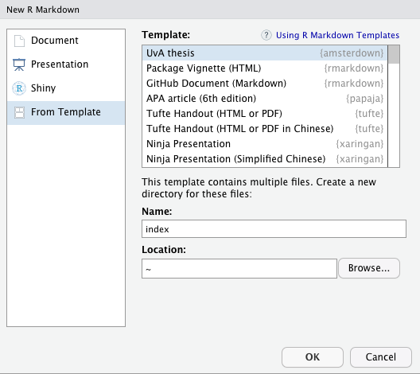
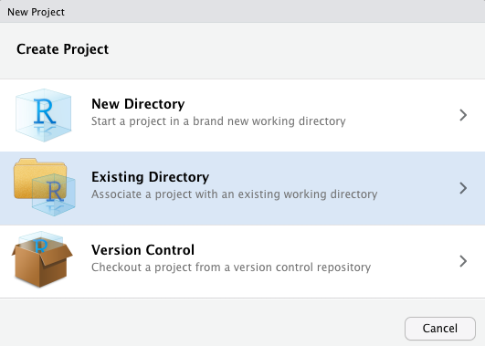
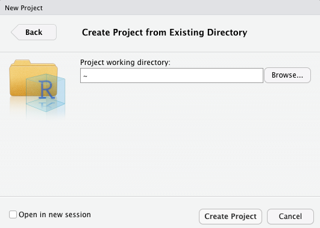
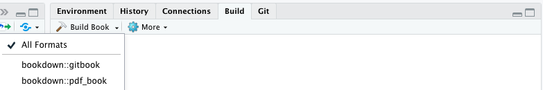

The best way to figure out how the template works is to look at the source files and output together, to understand how one is created from the other. Other than how to create headings, italic text and the like, I’ve included basic examples of things you’re likely to need whilst writing a thesis, such as citations, tables, plots, and equations.
Or, check out the source files for my PhD thesis, or any other PhD thesis templates (e.g. thesisdown, huskydown, or oxforddown).
For more extensive documentation, please see these other excellent sources on Markdown syntax, R Markdown, and bookdown:
amsterdown package from GitHub;
if(!require(devtools)) install.packages("devtools") # devtools package allows installation of packages from github
devtools::install_github("lcreteig/amsterdown") # install amsterdown from githubN.B. you don’t need to load the package (e.g. with library(amsterdown)) in order to use it; the only reason it’s a package is that the package structure is just the easiest way to get the template files and dependencies (the rmarkdown, knitr, and bookdown packages) to you.
If you don’t have pandoc, you’ll need to install that as well. Note that RStudio comes bundled with pandoc, so if you’re using RStudio you should be all set.
To make the PDF version of the thesis, you’ll also need a LaTeX distribution. If you have one installed already, you should be good to go. If not, I recommend TinyTeX. The tinytex package should come bundled with bookdown (and thus amsterdown), which allows you to easily install the LaTeX distribution from R:
tinytex::install_tinytex()N.B. If you’re working with RStudio, you’ll need to restart it after installing TinyTeX.
index (under “Name”). This is only to ensure that the main file will be correctly named index.Rmd; after the template has been created, feel free to change the name of the directory.
It’s good practice to also create an RStudio project for your thesis. This’ll make sure your working directory is set correctly, and it will allow you to use the nifty “Build Book” button to easily render the thesis (see Building the thesis, Using RStudio). Whenever you want to resume working on the thesis, open the .Rproj file that’s created in this step.
To create an RStudio project, go to “File” in the menu bar, then choose “New Project…”
In the following screen (see the screenshot below), select “Existing Directory”.

index, but you probably have changed it by now). Finally, click “Create Project”.
You can also use the rmarkdown::draft() function to create the template files (e.g. if you’re not using RStudio):
rmarkdown::draft('index.Rmd', # create new draft based off template
template = 'thesis', package = 'amsterdown',
create_dir = TRUE, edit = FALSE) Again, this will also create a directory named index, but feel free to change that name.
Your newly created folder with the thesis template should contain the following files.
├── 01-introduction.Rmd
├── 02-chapter.Rmd
├── 03-chapter.Rmd
├── 04-discussion.Rmd
├── 05-supplement.Rmd
├── 06-references.Rmd
├── 07-summary-Dutch.Rmd
├── 08-acknowledgments.Rmd
├── 09-miscellaneous.Rmd
├── _00-preface.Rmd
├── _bookdown.yml
├── figures
│ ├── uvalogo_regular_p_en.jpg
│ └── uvalogo_regular_p_en.pdf
├── index.Rmd
├── template.tex
└── thesis.bib.Rmd (R Markdown) files each contain a single chapter. The easiest way to keep them in order is by prefixing a number to the file name: this ordering will also determine the order of the chapters in the book. However, this doesn’t hold for two of these:
index.Rmd does not actually contain any R Markdown content, but only YAML options that determine how the book will be rendered. See the YAML variables section below. The name of this file must be index.Rmd, as it will become the “home page” of the HTML version of the thesis (which is only recognized if it is named index.html)_00-preface.Rmd will only show in the HTML version of the thesis; it is intended to house some of the info that’s in the front matter of the PDF version of the book (e.g. funding info, names of your supervisors, etc.). It does not follow the regular ordering scheme: this will always come first, because it is referred to directly in index.Rmd. If you don’t want something like this, simply remove the code chunk in index.Rmd that references it._bookdown.yml contains a few more YAML options. See the bookdown book for more info, though you likely won’t ever have to change any of these./figures folder contains some example images included in the template (the UvA logo).template.tex is the pandoc LaTeX template that will determine how the PDF output of the thesis will look. If you ever want to change something about the PDF (e.g., the font that’s used, where the page numbers are, etc.), you’ll likely have to modify this file and add some LaTeX commands. Note that the html version of the thesis also has a template, but this cannot be modified.thesis.bib is a BibTeX file that contains all the bibliographic information on the cited works in your thesis. Most reference managers (e.g. Mendeley; Zotero) can export such a file based on your library of references. You can change the name or location of this file, as long as you change the bibliography field in index.Rmd as well.The output of the template can be controlled by setting various YAML options in index.Rmd (and _bookdown.yml). Here’s a list of all the options that are specific to the amsterdown template, which are in index.Rmd. There are plenty other YAML options; see the documentation linked at the top of this page for more info on those.
The following information will be included in the title page as mandated by the university. The template will fill in the rest and make sure it is exactly formatted as the university requires.
---
title: "My Awesome Thesis"
subtitle: |
| This subtitle is sooooo long
| I'm 'a break it up
author: "Phil Henry Doctor"
aula: true
date: "maandag 21 oktober 2019"
time: "14.00"
birthplace: "Parijs"
country_of_birth: "Frankrijk"
---title: The main title of your thesis (not including possible subtitles). This will print on the very first page in the book (the “half-title”), and on the “full” title page as mandated by the universitysubtitle (optional): The subtitle of the thesis. This will only print on the full title page. Note that the example demonstrates how the title/subtitle can be broken into separate lines, in case they are really longauthor: This should be your full name, including any middle names you might have, as it would appear in your passportaula:
true
false (or leave out altogether)date: The date of your defense, in Dutch, in the following format: “weekday DD month YYYY”. For example: “maandag 21 oktober 2019” (Monday October 21, 2019)time: hh:mm (24h) time of your defense. For example: “14:00”, or “10.00”birthplace: your place of birth, in Dutchcountry_of_birth:
This is the second page in the book, which often lists information on the printing of the book, copyright, funding info, etc. I’ve included a couple things here that people generally mention.
This page tends to look slightly differently in each thesis, and is subject to personal preference obviously, so it’s hard to make a good template for it. It can be changed by modifying template.tex, or feel free to contact me if you don’t feel confident doing so.
---
grant: "Starting grant (111-2-3)" # optional, otherwise this bit is omitted
funder: "the Non-existent Organization for Space Exploration (NOSE)"
---If you define the funder option, the colophon page starts with:
The investigations in this thesis were supported by [a]
grant[from]funder"
grant (optional): title and number of the grant that funded your work. If you omit grant, the rest of the sentence will still read well (“The investigations in this thesis were supported by funder”)funder (optional): name of the organization that funded your work---
ISBN: "xxx-xx-xxxx-xxx-x"
printing: "Acme Press, Inc."
cover: "Designed by Phil Henry Doctor"
---These options will be preceded with the following sentence:
This thesis was typeset using (R) Markdown, LaTeX and the
bookdownR-package
This is the only thing that will always print on the colophon page, to give some credit where it’s due.
ISBN (optional): If defined, this will read: “ISBN: [whatever you fill in here]”. The ISBN for the printed book. It’s not mandatory to have one (and it’s not free). You can usually apply for one with the company you print your thesis with.printing (optional): If defined, this will read: “Printing: [whatever you fill in here]”. The printing company often likes to be mentioned here.cover (optional): If defined, this will read: “Cover: [whatever you fill in here]”. Many PhD students have their covers created by someone else; this would be the place to acknowledge them.Again, these options can be skipped entirely, but if you define thesis_url, the colophon page will end with:
An online version of this thesis is available at
thesis_url[,licensed under alicense.]
thesis_url (optional): This template makes it really easy to also publish your thesis as a website (in html): you basically get it “for free” with the pdf version! See the “Publishing” article for some tips on how to get it online.license (optional): If you do publish the thesis online for a wider audience, it’s always a good idea to add a license. I’d suggest one of the Creative Commons licenses to maximize the utility of your thesis for others, but you can also keep the copyright to yourself obviously (this will be the default if you don’t include an explicit license/copyright statement).The back of the title page has to contain the name of your faculty, supervisors, and committee members; again in a special University-mandated format. The template will make sure the table is generated in this format. Make sure the specification here matches the one you sent in to the graduate school!
---
promotores:
- title: prof. dr.
initials: T.
surname: Zonnebloem
affiliation: Universiteit van Amsterdam
- title: prof. dr.
initials: H.
surname: Jones
affiliation: University of Indiana
one_promotor: false
---First, your “promotores”, i.e. your supervisors (associate professors and upwards qualify for this role). The promotores: field has the following four subfields:
title: either “prof. dr.” for full professors, or “dr.” for othersinitials: -surname: -affiliation: the name of the university your promotor works atIf you have more than one promotor, simply copy these four fields (including the “-” in front of title!) and fill in the details for each additional promotor. If you only have one promotor, delete the 2nd set of fields, and set the one_promotor field to true. This will make sure the singular “Promotor” is printed in the table, instead of the plural (“Promotores”).
---
copromotores:
- title: dr.
initials: W.
surname: Ho
affiliation: University of Gallifrey
one_copromotor: true
---The same goes for your “copromotores” (supervisors that are not “promotores”, e.g. assistant professors): fill in as many as you have, and set the one_copromotor field to false if you have more than one. If you don’t have any “copromotores”, simply delete all of these fields.
---
members:
- title: prof. dr.
initials: H.J.
surname: Farnsworth
affiliation: Mars University
- title: prof. dr.
initials: J.I.Q.N.
surname: Frink
affiliation: University of Springfield
---Then there’s the members of your committee: the one who’ll be asking you questions during the defense. Usually there’ll be around 5 or 6 members; simply copy the fields as many times as needed.
Finally, fill in the Dutch name of the faculty you were employed with here.
There’s one additional setting in amsterdown, which determines what kind of printed book will be generated as a pdf.
book_size is set to false, the pages of the PDF will be A4 sized. The document will also be “one-sided”, i.e. the headers, page numbers, margins and the like will be the same for even or odd pages. This format might be useful when you submit your thesis to the committee for the first time, because they might print it on loose sheets of A4 paper. If any of your chapters were already (in the process of being) published as journal articles, you’ll also likely have optimized them for A4/letter paper, thus saving you some time at this stage.book_size is set to true, the pages of the PDF will be the standard size of printed theses in The Netherlands: 170 x 240 mm (which is closest to B5 paper). It’s a good idea to stick to this size, as printing companies could charge a lot more for custom formats (and your thesis will literally “stick out” in a stack of others). The document will also be “two-sided”, i.e. the headers, page numbers, margins and the like will be different for odd pages compared to even pages, as they’ll be viewed as a two-page spread (a book). This is the final format for your thesis: the PDF file you would send to the printer. After submitting to the committee, you’re still allowed to change the formatting, so most people only do this after their thesis has been approved by the committee. Hopefully you won’t have to change much, but obviously you might find that some figures/tables will not fit as nicely on these smaller pages.Choose any of the two methods below to finally render your thesis! It should show up in a subdirectory called _book. RStudio will probably show you a preview of the result, but if not: open _book/index.html if you rendered to html, or _book/thesis.pdf if you rendered to pdf.
If you created an RStudio project, you should see a “Build Book” button on the “Build” pane. Click the button itself to render the thesis to both html and pdf, or click the little triangle next to it to choose the output format (bookdown::gitbook = html; bookdown::pdf_book = pdf).

You can also use the bookdown::render_book() function to build the book (e.g. if you’re not using RStudio):
setwd("index") # navigate to the new directory
# render the thesis template to all output formats
bookdown::render_book("index.Rmd", output_format = "all")
# or
#bookdown::render_book("index.Rmd", output_format = 'bookdown::gitbook') # to render to html
#bookdown::render_book("index.Rmd", output_format = 'bookdown::pdf_book') # to render to PDF